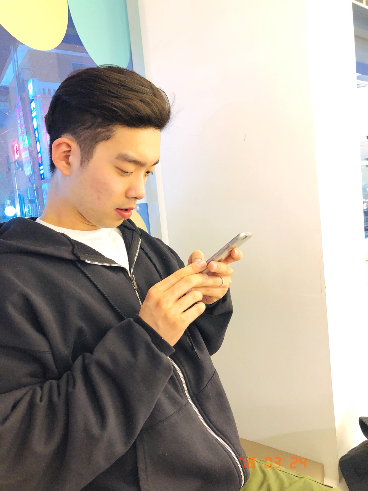

지훈오빠(시립대,25)
의 TMI를 공유하는 팬페이지입니다
양지훈

약력소개
SNS
반려견
약력소개
양만두(Mando Yang)
내일은 회계왕
MC 양동이
상계동 왕손
립대공유
립대김진표
고태원이 뽑은 '립대 최고의 패션왕' 2014, 2015, 2016, 2017
구득현이 뽑은 '내가 여자라면 꼬시고 싶은 남자 1위' 2018
안혜린이 인정한 8.5점남
기타 라마, 낙타, 염소, 뱀, 개구리 등 닮은 동물 별명 약 20종 보유